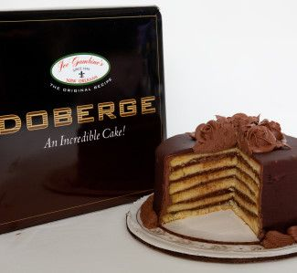

Based on the Hungarian Dobos torte (pronounced Do-bash), this cake was developed in New Orleans, Lousisana by a local baker, Beulah Ledner in 1933. This cake is made of multiple layers of cake alternating with pudding. Locals serve up this rich cake for birthdays, anniversaries, Mardi Gras and any other special occasion.This cake doesn’t require any complex or rare ingredients, but it does take up a lot of time.

Learn more about the Doberge cake by visiting these websites: